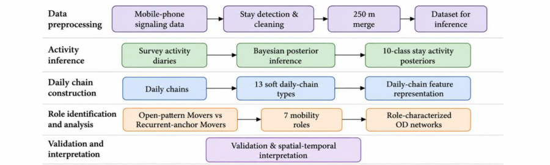

2025–2026
Activity Chains & School-Related Travel
Master’s thesis · Peking University

Research motivation
What can incomplete observations tell us about daily activities?
Working with coarse mobile phone signalling records led me to ask what activity information remains useful when locations and destinations are uncertain. I want to preserve recurring structures, individual variation and household coordination without requiring a precise reconstruction of every movement.
Work & methods
- Combine mobile phone signalling with travel-survey diaries for Bayesian activity inference.
- Use stop timing, duration, recurrence and sequence position to interpret activities and represent uncertainty.
- Examine how school journeys, work commutes and household responsibilities are organised into linked daily activities.
- Develop month-long mobility representations and soft profiles to describe overlapping behavioural tendencies.